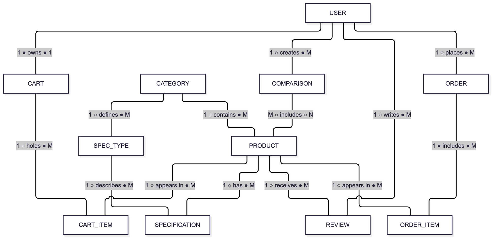
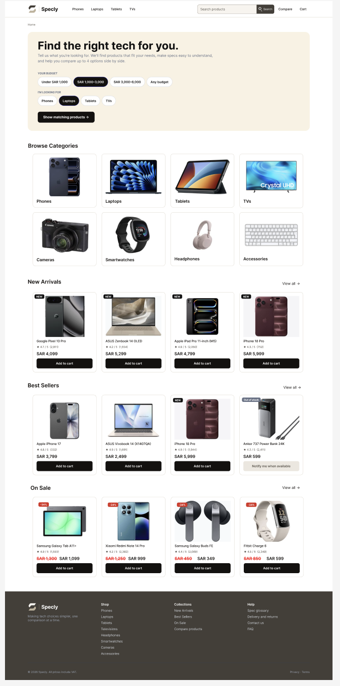
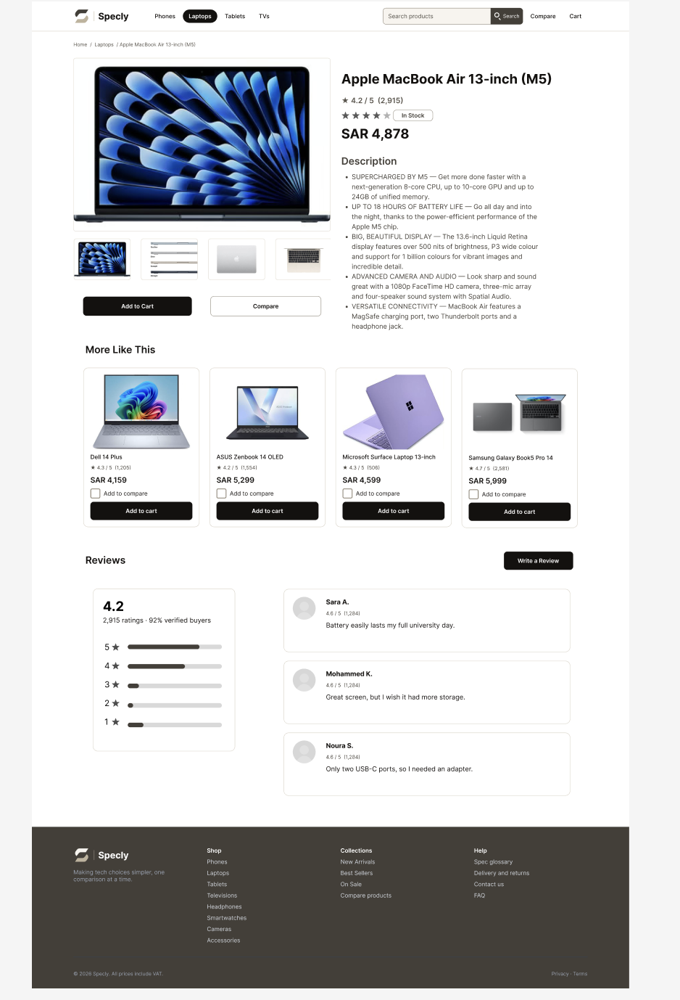
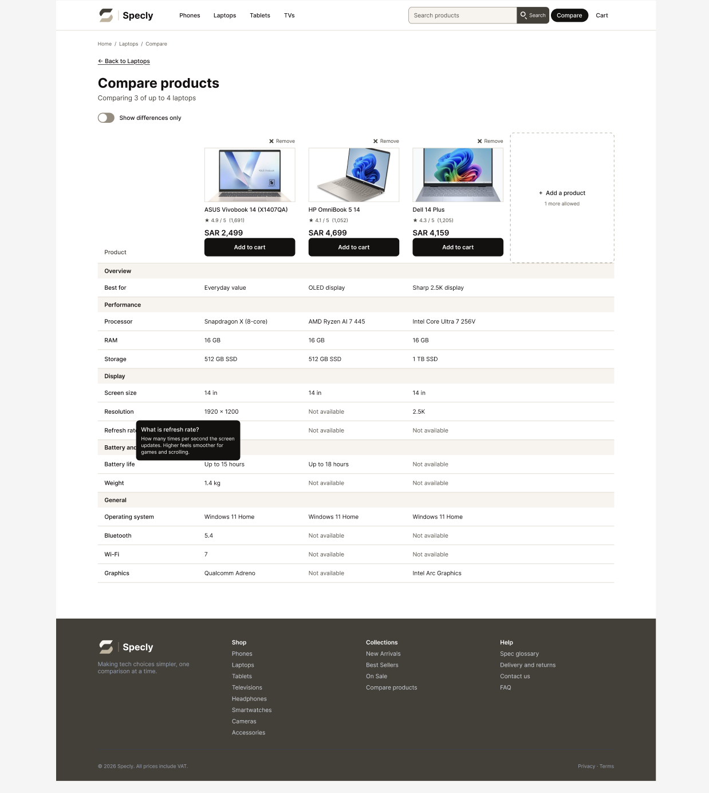
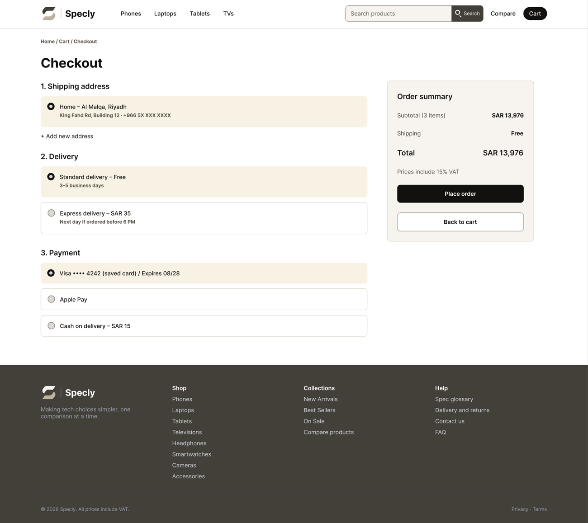

GR1: Project Proposal and Analysis
Group Members
| # | Name | Student ID |
|---|---|---|
| 1 | Hala Alfardan | 202212973 |
| 2 | Asma Sardar | 202312547 |
| 3 | Rana Alshehri | 202312555 |
| 4 | Leena Albakawi | 202312520 |
Problem Statement
Users shopping for electronics online want to find a product that meets their needs and confidently understand how their options differ. However, the large number of available products, complex filtering systems, and technical specifications can make this process difficult.
Users may struggle to narrow down products using criteria that are relevant to their needs, such as battery life, display quality, storage, or performance. Product information can also be difficult to interpret when it contains unfamiliar technical terminology or is presented across different sections or pages.
Comparing products presents another challenge. Users may need to move between multiple product pages or browser tabs, remember specifications, and manually identify differences between products. This increases the amount of information users must process and makes it more difficult to determine which products best match their needs.
These challenges can affect users with different levels of technical knowledge and familiarity with electronics. Dense layouts, small text, technical language, and large amounts of information can further increase the difficulty for older users, less technically experienced users, and users with accessibility needs.
As a result, users may spend considerable time searching, interpreting product information, and comparing alternatives before they can make a confident purchasing decision.
Our goal is to design an electronics shopping interface that helps users of all levels of technical knowledge find relevant products, understand what specifications mean, and compare alternatives side by side, so they can reach a confident purchasing decision with less time and effort.
GR1 Analysis
1. User Research
Method
To inform our user and task analysis, we interviewed and observed three representative users: two Casual Shoppers and one Tech Enthusiast. Each session began with a short interview about participants' online electronics shopping habits, followed by an observation in which they completed realistic tasks on existing e-commerce websites such as Amazon, Noon, and Jarir: finding a suitable product, evaluating it, and comparing two products.
Participants
| Participant | User class | Age | Background | Main device | Shopping frequency |
|---|---|---|---|---|---|
| P1 | Casual Shopper | 24 | Non-technical | Mobile phone | 2–3 times a year |
| P2 | Tech Enthusiast | 21 | Software Engineering student | Laptop | Every few months |
| P3 | Casual Shopper | 50 | Non-technical | Mobile phone | 1–2 times a year |
Findings
Finding 1 – Casual shoppers start with simple decision criteria.
Both casual participants (P1 and P3) focused on price, ratings, and reviews rather than technical specifications. P1 applied the price filter first and did not use technical filters, while P3 searched with broad terms and described the number of available options as one of the hardest parts of choosing a device.
Finding 2 – Technical terminology is a barrier for less experienced users.
Both casual participants had difficulty understanding specifications. P1 described “too many numbers and technical terms” as the main challenge, and during observation she asked what refresh rate meant before returning to the reviews. P3 reported not knowing what many specifications mean and needed clarification when she encountered unfamiliar terms during the tasks.
Finding 3 – Tech enthusiasts evaluate products against specific technical requirements.
P2 described first deciding on the specifications he needed and then comparing several models. During observation, he went directly to the processor, RAM, and storage filters and spent more time on technical details than on ratings.
Finding 4 – Comparing products relies on switching between pages and memory.
None of the participants had a way to view products side by side. P1 switched between product pages and reported sometimes forgetting the specifications of the first product. P2 opened multiple browser tabs and compared specifications manually. P3 did not compare specifications in detail, explaining that there were too many to go through, and relied on the main information and reviews instead.
Finding 5 – Incomplete and inconsistent specifications affect technical users.
P2 identified finding all specifications in one place as his main difficulty, noting that specifications are sometimes incomplete or presented differently across websites.
Finding 6 – Users shop on different devices.
Both casual participants (P1 and P3) shop mainly on their phones because they find it faster and easier, while P2 prefers a laptop because it makes comparing specifications easier. The interface therefore needs to support searching and comparing on small screens as well as on desktop.
Finding 7 – Language preference is linked to technical familiarity.
P1 and P3 preferred Arabic because it made product information and technical terms easier to understand, while P2 preferred English because most technical information and reviews are available in English.
Finding 8 – Users rely on sources outside the store before deciding.
All three participants looked beyond the product page when uncertain. P1 used Google, YouTube reviews, and friends' experiences; P2 used reviews and YouTube benchmarks; and P3 asked family members for help choosing a product.
Limitations
Our sample was small (three participants) and included only one Tech Enthusiast, so findings about that user class (Findings 3 and 5) should be treated as preliminary. All participants were located in Saudi Arabia and familiar with the same local stores, which may not represent users in other markets. We plan to include more participants from both user classes during later evaluation stages.
2. User Analysis
General Characteristics
- Age: Our participants ranged from 21 to 50, and the target population includes young adults as well as middle-aged and older shoppers.
- Devices: Non-technical users mainly shop on mobile phones (P1, P3), while technical users prefer laptops for comparing specifications (P2).
- Purchase frequency: Electronics are bought infrequently by casual users (1–3 times a year, P1 and P3), so they rarely build up knowledge of specifications between purchases.
- Language: Non-technical users prefer Arabic (P1, P3), while technical users prefer English because most technical information is in English (P2).
- Stores used: Participants commonly shop on Amazon, Noon, and Jarir.
- External sources: All participants consult sources outside the store before deciding, such as YouTube, Google, friends, or family (P1–P3).
User Class 1: Casual Shopper
- Goal: Find a suitable product quickly and confidently.
- Technical knowledge: Low familiarity with specifications and technical terms.
- Main device and language: Mobile phone; prefers Arabic.
- Decision criteria: Price, ratings, reviews, and advice from friends or family.
- Main difficulties: Understanding which specifications matter and what they mean, and dealing with too many options.
- Evidence: P1 started with the price filter and asked what refresh rate meant; P3 described the number of options as one of the hardest parts of choosing and relied on family members for help.
User Class 2: Tech Enthusiast
- Goal: Find and evaluate products against specific technical requirements.
- Technical knowledge: High familiarity with specifications and electronics terminology.
- Main device and language: Laptop; prefers English.
- Decision criteria: Detailed specifications such as processor, RAM, storage, display, and battery, supported by reviews and benchmarks.
- Main difficulties: Incomplete or inconsistent specifications, and comparing products manually across pages.
- Evidence: P2 went directly to the processor, RAM, and storage filters, compared products across multiple browser tabs, and identified finding all specifications in one place as his main difficulty.
3. Task Analysis
Task 1: Find a Product
Goal
The user wants to locate one or more products that match their needs from the available product catalog.
Preconditions
- The user has accessed the website.
- The user has a general idea of what they are looking for, such as a product category, brand, use case, or specific product.
Subtasks
- Enter a search term or browse by product category.
- Review the initial set of results.
- Apply filters to narrow the results, such as price, brand, or product specifications.
- Scan product cards for relevant information such as product name, price, rating, and key specifications.
- Select one or more products for further evaluation.
Frequency of Use
Performed at the start of a shopping session. Casual participants buy electronics 1–3 times a year (P1, P3), while the Tech Enthusiast buys every few months (P2).
Time Constraints
Users need to locate relevant products without having to process an unnecessarily large number of results.
Exceptions
- The search returns no relevant results.
- The results contain too many irrelevant products.
- Available filters do not include criteria relevant to the user's needs.
- The desired product or category is unavailable.
- Too many options make it difficult to choose (reported by P3).
Differences Between User Classes
| Casual Shopper | Tech Enthusiast | |
|---|---|---|
| Starting point | May browse by category or use broad search terms | May search for a specific model, brand, or technical requirement |
| Filter usage | More likely to use basic criteria such as price and brand | More likely to use detailed specifications such as processor, RAM, or display |
| Product-card information | Focuses on price, rating, image, and key features | Looks for relevant technical specifications and model information |
| Device | Mobile phone (P1, P3) | Laptop (P2) |
Task 2: Evaluate a Product
Goal
The user wants to examine a product in detail and determine whether it meets their needs.
Preconditions
- The user has identified a product of interest.
- The product has an accessible product page.
Subtasks
- Open the product detail page.
- View product images.
- Read the product description and key features.
- Review technical specifications.
- Read ratings and user reviews.
- Determine whether the product meets the user's requirements.
- Decide whether to purchase the product, add it to a comparison, or return to the results.
Frequency of Use
May be performed for multiple products during a shopping session, particularly when the user is considering several alternatives.
Time Constraints
Information should be presented in a way that allows users to locate and understand important details without unnecessary navigation between sections or pages.
Exceptions
- Important specifications are missing (reported by P2).
- Product information is unclear or inconsistent.
- Reviews or ratings are unavailable.
- Technical terminology is difficult to understand (P1 asked about refresh rate; P3 needed clarification).
- Product images do not provide sufficient information about the product.
Differences Between User Classes
| Casual Shopper | Tech Enthusiast | |
|---|---|---|
| Main focus | Price, ratings, reviews, images, and key features | Detailed technical specifications and performance-related information |
| Interpretation of specifications | Needs simpler explanations of technical terms; P1 returned to reviews after not understanding refresh rate | Interprets specifications independently (P2) |
| Evaluation approach | Considers overall suitability and trust signals | Checks specifications against specific requirements |
| Information preference | Clear and concise information | Detailed and complete information |
| When uncertain | Asks friends or family, or searches Google and YouTube (P1, P3) | Checks reviews and YouTube benchmarks (P2) |
Task 3: Compare Products
Goal
The user wants to compare two or more products and identify the differences that are relevant to their decision.
Preconditions
- The user has identified at least two products they are considering.
Subtasks
- Select products for comparison.
- Open the comparison view.
- Review products side by side.
- Compare relevant attributes such as price, specifications, ratings, and features.
- Identify meaningful differences between the products.
- Determine which product better matches the user's requirements.
- Proceed to purchase, continue browsing, or return to product evaluation.
Frequency of Use
May be performed when users are considering multiple products, with frequency depending on the user's shopping approach and the number of suitable alternatives.
Time Constraints
The comparison should allow users to identify important differences without repeatedly switching between separate product pages.
Exceptions
- Products have few attributes in common.
- One or more products have incomplete specifications.
- Too many products are added, making the comparison difficult to process.
- Important differences are difficult to identify from the presented information.
Differences Between User Classes
| Casual Shopper | Tech Enthusiast | |
|---|---|---|
| Products compared | A small number of alternatives | May compare several alternatives |
| Main attributes | Price, ratings, brand, key features | Processor, RAM, storage, display, battery, and other detailed specifications |
| Comparison approach | Relies on main information and reviews rather than specifications (P3) | Compares specifications manually across browser tabs (P2) |
| Main difficulty | Remembering specifications across pages (P1); too many specifications to compare (P3) | Inconsistent or incomplete specifications across websites (P2) |
Task 4: Purchase a Product
Goal
The user wants to complete the purchase of a selected product.
Preconditions
- The user has selected a product to purchase.
- The product is available for purchase.
- The user has the information required to complete checkout.
Subtasks
- Add the product to the shopping cart.
- Review the cart, including product, quantity, and price.
- Proceed to checkout.
- Enter or confirm shipping information.
- Select a payment method and provide the required payment information.
- Review the order summary.
- Confirm and place the order.
- Receive an order confirmation.
Frequency of Use
Generally performed after the user has selected a product and decided to purchase it.
Time Constraints
Users need to be able to complete checkout without unnecessary steps or navigation. Important costs and order information should be visible before the order is confirmed.
Exceptions
- The selected product becomes unavailable.
- Payment is declined or cannot be completed.
- Shipping is unavailable to the user's location.
- Additional costs appear during checkout.
- Required checkout information is missing or invalid.
- The user's session expires before the purchase is completed.
Differences Between User Classes
| Casual Shopper | Tech Enthusiast | |
|---|---|---|
| Information checked before purchase | May recheck price, reviews, and key features | May recheck selected specifications and product configuration |
| Checkout preference | Clear, straightforward process | Efficient process with sufficient order and product details |
| Potential concern | Uncertainty about whether the selected product meets their needs | Ensuring the selected model/configuration is correct |
4. Domain Analysis
The following table describes the key entities in the system, their relationships, and the multiplicity of each relationship.
| Relationship | Multiplicity | Meaning |
|---|---|---|
| Category → Product | 1 : many | One category has many products, and each product belongs to one category |
| Category → Specification Type | 1 : many | Each category decides which specifications apply to it (laptops have RAM, headphones don't) |
| Specification Type → Specification | 1 : many | One type (like “RAM”) has a value for many products |
| Product → Specification | 1 : many | Each product has many specifications (for example, RAM = 16 GB) |
| User → Review | 1 : many | A user can write many reviews |
| Product → Review | 1 : many | A product can have many reviews |
| User → Cart | 1 : 1 | Each user has one active cart |
| Cart → CartItem | 1 : many | A cart can hold many items |
| Product → CartItem | 1 : many | A product can be in many users' carts |
| User → Order | 1 : many | A user can place many orders |
| Order → OrderItem | 1 : 1..many | Every order has at least one item |
| Product → OrderItem | 1 : many | A product can be in many orders |
| User → Comparison | 1 : many | A user can create many comparisons |
| Comparison → Product | many : many | A comparison has several products, and a product can be in many comparisons |
Entity Definitions
Specification: One piece of technical information about a product, like “Battery life: 10 hours”. It has a name, a value, and a unit. Users filter and compare products using specifications.
Specification Type: The list of specifications that belong to a category. For example, laptops have RAM and processor, but headphones don't. This lets the filters and comparison table change based on the product type.
Comparison: A group of products the user chooses to see side by side. We limit it to 4 products so it stays easy to read, and all products should be from the same category.
Cart: The products a user wants to buy but hasn't paid for yet. Each user has one active cart.
CartItem and OrderItem: These connect a product to a cart or an order and save the quantity. OrderItem also saves the price the user paid, because the product price can change later.

GR2 Computer Prototype
1. Platform and software requirements
The system is a web-based application that can be accessed using a web browser. No installation is required on the user's device.
| Platform | Desktop or laptop computer. The interface was designed in Figma and optimized for desktop use only. |
|---|---|
| Operating System | Windows 10/11, macOS, or Linux. The system runs in the browser, so it doesn't depend on a specific operating system. |
| Browser | A recent version of Google Chrome, Microsoft Edge, Mozilla Firefox, or Safari |
| Screen Size | Designed for a resolution of 1440 × 900. |
| Account / internet | No account, login or installation is needed. An internet connection is required. |
2. Start-up instructions
- Open the prototype link in your browser: Specly interactive prototype (Figma)
- The prototype opens in prototype mode on the Specly Home page. No setup or screen selection is needed, because it fits the browser window automatically.
- Click to move around the store. You can use the header menu (Phones, Laptops, Tablets, TVs, Compare, Cart), product cards, breadcrumbs at the top of each page, and the footer links.
- Use the "Task scenarios" section below for what to try in each of the four tasks (Find a Product, Evaluate a Product, Compare Products, Purchase a Product).
- Some items show help or feedback when you interact with them. For example, a message appears when you tick a product to compare, and the "?" next to Refresh Rate on the compare page explains the term when you hover over it.
- To go back, use the breadcrumbs or the "Back" links on the page. To start again from the beginning, click the Specly logo, or reload the link.
3. Task scenarios
Task 1: Find a Product
You are looking for a laptop for university and want to find an option that fits your budget and requirements. Explore the available laptops and identify a suitable product.
Task 2: Evaluate a Product
You are considering purchasing a laptop but want to understand whether it is worth buying. Examine its product information, specifications, images, ratings, and customer reviews before deciding whether it meets your needs.
Task 3: Compare Products
You are considering three laptops and want to determine which one offers the best value for your needs. Select products for comparison, examine their prices, specifications, and features side by side, and decide which laptop you would choose.
Task 4: Purchase a Product
You have decided which laptop best suits your needs and are ready to buy it. Complete the checkout process and confirm your order.
4. Shallow parts
As required for a computer prototype with no backend, some responses are canned. Search and filters show fixed, pre-designed results, and the search bar does not accept typing. Products, prices, and reviews are sample data. At checkout, the address and payment method are pre-selected, and no real payment is made. Sign-in, quantity changes, pagination and the Arabic version are planned for later versions. Since Figma does not support user input, each exception path has its own screen, shown in the table below.
| Task | Part | Status | Notes |
|---|---|---|---|
| Task 1 – Find | Home, categories, search results | Interactive | Category cards, "View all" links, and breadcrumbs work |
| Task 1 – Find | Search bar | Canned | Cannot be typed in; clicking it opens popular searches that lead to fixed results |
| Task 1 – Find | Filters, sort, pagination | Static | Not linked |
| Task 1 – Find | Budget and category chips on Home | Static | Shown for context; not clickable |
| Task 2 – Evaluate | Product page | Interactive | Image viewer, add to cart, compare, and the no-reviews and out-of-stock screens work |
| Task 2 – Evaluate | Product details | Canned | Every product card opens the same product page |
| Task 2 – Evaluate | Write a review, out-of-stock email | Static | The pop-ups open and close, but nothing can be submitted |
| Task 3 – Compare | Compare bar and compare page | Interactive | Selecting products, the 4-product limit, the differences toggle, remove and undo, and the refresh-rate tooltip work |
| Task 3 – Compare | Compared products | Canned | Always the same three laptops |
| Task 4 – Purchase | Cart, remove and undo, checkout, place order | Interactive | The full flow from cart to order confirmation can be clicked through |
| Task 4 – Purchase | Quantity (− / +) | Static | Not linked; quantity and totals don't change |
| Task 4 – Purchase | Checkout options | Static | Address, delivery, and payment options can't be selected |
| Task 4 – Purchase | Order details | Canned | Order number, delivery dates, and totals are fixed |
| Task 3 – Compare | "Add to compare" ticks | Partly interactive | Work only on the first laptop cards of the main Laptops page, not on the filtered page |
| Task 4 – Purchase | "Track order" | Static | Not linked |
| Task 4 – Purchase | "Proceed to checkout" with an out-of-stock item | Blocked on purpose | Not linked, because the cart contains an item that is out of stock |
Where to find the exception screens
| Task | Exception screen | How to reach it |
|---|---|---|
| Task 1 – Find | No search results | Hover the search box, then "iPhone 18 Pro" |
| Task 2 – Evaluate | Product with no reviews | On a product page, under "More Like This", click the Microsoft Surface Laptop |
| Task 2 – Evaluate | Out-of-stock product | Under "More Like This", click the Samsung Galaxy Book5 Pro; the red "Item Out of Stock" button opens a pop-up |
| Task 3 – Compare | Limit reached (4 of 4) | On the Laptops page, after selecting the first three laptops, selecting Acer Aspire 5 15 as the fourth displays a message indicating that the comparison limit has been reached. |
| Task 3 – Compare | Only one product left | On the compare page, click "Remove" on one of the three products |
| Task 4 – Purchase | Cart with an out-of-stock item | On the out-of-stock product page, click "Cart" in the header |
| Task 4 – Purchase | Item removed (Undo) | In the cart, click "Remove" on the iPad |
5. Design Rationale Table
| Design decision | Principle or pattern | GR1 evidence |
|---|---|---|
| Compare page shows products side by side, with the specs in aligned rows | Recognition rather than recall | Finding 4: no participant could view products side by side. P1 switched between product pages and forgot the first product's specs, and P2 opened several browser tabs |
| "Show differences only" toggle that hides identical rows | Aesthetic and minimalist design | Finding 4 and the Task 3 goal of seeing the important differences without switching pages. P3 did not compare specifications in detail because there were too many to go through |
| "?" next to Refresh Rate that explains the term on hover | Help and documentation | Finding 2: P1 asked what refresh rate meant during the observation, and P3 needed terms explained |
| Compare bar that stays visible while you scroll, with an "added" message after ticking a product | Visibility of system status | Finding 4: P1 forgot the specs of the first product, so showing the selected products at all times removes the need to remember |
| Notice when the limit of 4 products is reached | Error prevention | Task 3 analysis: casual users compare a small number of alternatives (P3 found many specifications too much to go through) |
| Undo message after removing an item | User control and freedom (Safe Exploration) | Casual users buy only 1–3 times a year (P1, P3), so they need a forgiving interface |
| Breadcrumbs and a highlighted header link on every page | Wayfinding (You-are-here signposts) | Finding 4: P1 switched between product pages, so users need to know where they are and how to return |
6. How layout, navigation and feedback follow the principles
Layout. Every page uses the same header, content width and footer, and products appear in an aligned grid of equal cards (Grid of Equals, alignment and grid). On the compare page, the specifications are grouped under titled sections (Overview, Performance, Display, Battery, General) and aligned in rows, so the eye can move straight across a row to compare products (Titled Sections, chunking information). The product page puts one large image at center stage, with the description, similar products and reviews in separate titled sections (Center Stage, visual hierarchy).
Navigation. The header is the same on every page, and the link for the current section is highlighted so users always know where they are (Wayfinding, you-are-here). Breadcrumbs show the path and let users go back to any earlier level, and the footer repeats the main sections, so every screen can be reached in a few clicks without using the browser's back button (user control and freedom).
Feedback. The interface answers every action (Visibility of system status): ticking a product shows an "added" message and a compare bar that stays on screen, reaching the limit of four products shows a notice, and removing an item shows an Undo message (Error prevention, user control and freedom). Hovering over the "?" explains a technical term (Help and documentation). Items that are out of stock are marked in red and with text, and offer a way to be notified.
7. Count the Taps
Task 1: Find a Product
Scenario: Find a suitable laptop for university within a budget of SAR 1,000–3,000.
Before – Amazon.sa
| Action | Clicks | Keystrokes | Screen Loads | Scrolls |
|---|---|---|---|---|
| Click the search bar | 1 | - | - | - |
| Type in “Laptop” | - | 6 | - | - |
| Click the search button | 1 | - | 1 | - |
| Select the price range filter | 1 | - | 1 | 1 |
| Open a suitable laptop | 1 | - | 1 | - |
| Total | 4 | 6 | 3 | 1 |
After – Specly
| Action | Clicks | Keystrokes | Screen Loads | Scrolls |
|---|---|---|---|---|
| Apply homepage quick filters | 1 | - | - | - |
| Click “Show Matching Products” | 1 | - | 1 | - |
| Open a suitable laptop | 1 | - | 1 | 1 |
| Total | 3 | 0 | 2 | 1 |
Interaction count comparison
| Interaction | Before (Amazon.sa) | After (Specly) | Reduction |
|---|---|---|---|
| Clicks | 4 | 3 | 25% |
| Keystrokes | 6 | 0 | 100% |
| Screen Loads | 3 | 2 | 33.3% |
| Scrolls | 1 | 1 | 0% |
Specly reduces the overall interaction effort by eliminating the need to type a search query and reducing the number of clicks and screen loads. The homepage quick filters allow users to narrow down their product choices more directly, while the number of scrolls remains unchanged.
8. Screenshots

Patterns: Grid of Equals (category cards and product cards), visual hierarchy.

Patterns: Center Stage (large product image), visual hierarchy, Titled Sections (description, More Like This, reviews).

Patterns: alignment and grid (specs in aligned rows), chunking information (specs grouped by section), Help and documentation ("?" hover explanation), Aesthetic and minimalist design ("Show differences only").

Patterns: chunking information (three numbered sections), prefilled defaults (saved address, delivery and card pre-selected).